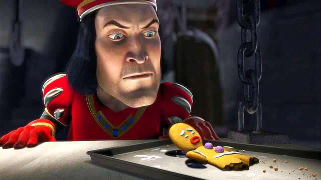

About Farquaad
Lord Maximus Farquaad is the main antagonist of the 2001 animated feature film Shrek, as well as Shrek 4-D and the musical. He is voiced by John Lithgow.
Farquaad traumatising said breadman
Farquaad's Characteristics
- He's comically short
- A ruthless ruler of Duloc
- He's in search of a princess to marry so that he can become king.
- Self-absorbed, self-deceiving, lonely and cruel
Some of Farquaad's friends
Captain of Duloc, the Magic Mirror and last but not least, Thelonious
- Captain of Duloc
- Magic Mirror
- Thelonious